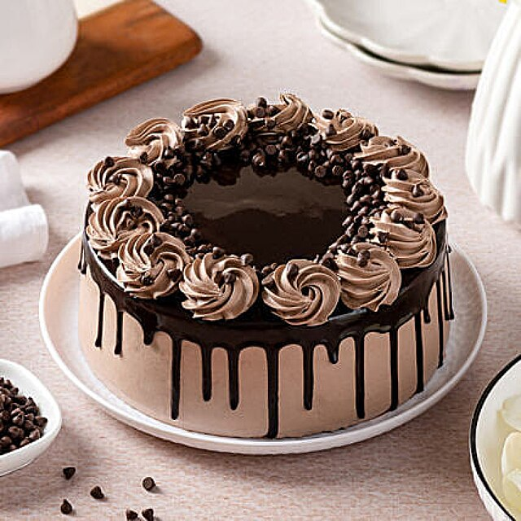

Chocolate cake

Description
An incredibly moist, rich, triple-layer, perfect chocolate cake with whipped cream filling and chocolate buttercream frosting.
This was always a favorite in our house! You can garnish the cake with sprinkles, chocolate curls, or seasonal fresh fruit.
Ingredients
- 1 cup unsweetened cocoa powder
- 2 cups boiling water
- 2 ¾ cups all-purpose flour
- 2 teaspoons baking soda
- ½ teaspoon salt
- ½ teaspoon baking powder
- 2 ½ cups white sugar
- 1 cup unsalted butter, softened
- 4 large eggs
- 1 ½ teaspoons vanilla extract
Steps
- Place cocoa in a medium bowl. Gently pour boiling water over top and stir to combine; let cool, about 15 minutes.
- Meanwhile, preheat the oven to 350 degrees F (175 degrees C). Grease and flour three 9-inch round cake pans.
- Sift together flour, baking soda, salt, and baking powder into a mixing bowl.
- Combine sugar and butter in a large mixing bowl; beat with an electric mixer until creamy. Add eggs, one at a time, mixing well after each addition. Stir in vanilla. Add flour mixture alternately with the cooled cocoa mixture, mixing only until combined. Pour 1/3 of the cake batter into each of the prepared pans, spreading evenly.
- Bake in the preheated oven until a toothpick inserted into the centers comes out clean and cakes pull away from the sides of the pans, 18 to 22 minutes. Remove cakes from the oven and set on a wire rack to cool for about 5 minutes. Run a table knife around the edges to loosen. Invert cakes carefully onto the wire rack and let cool completely, about 20 more minutes.
Back to index